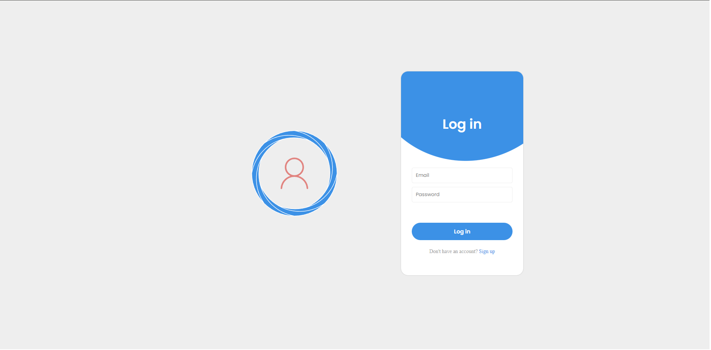
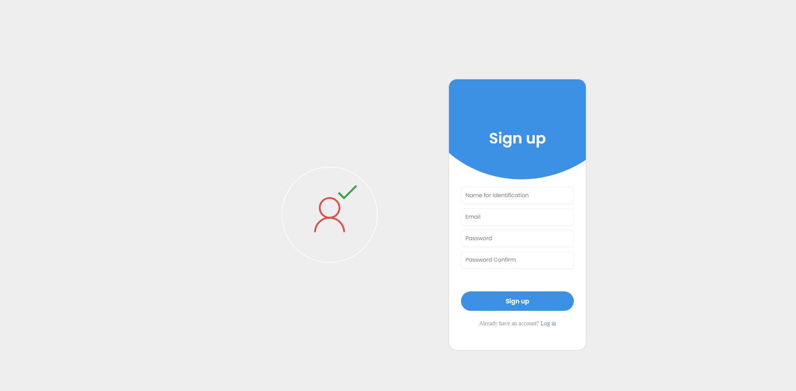
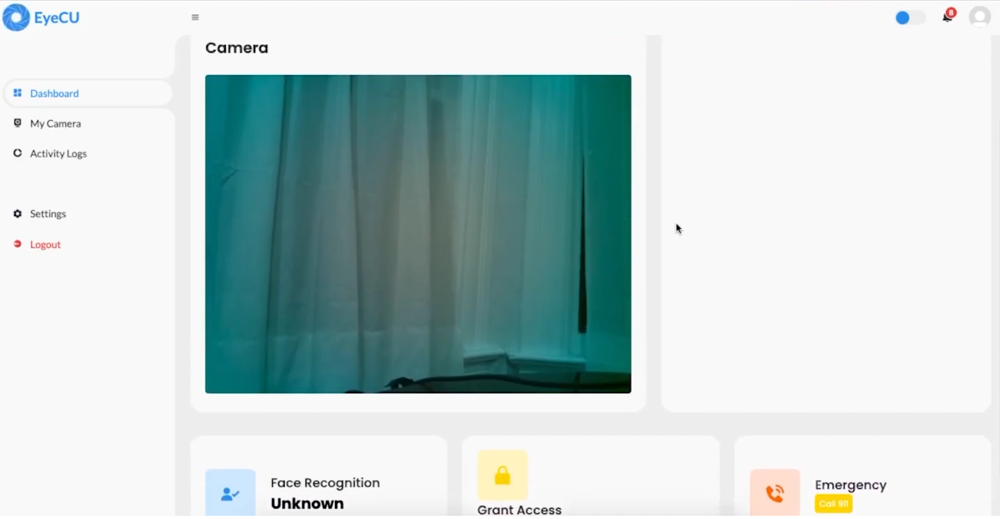
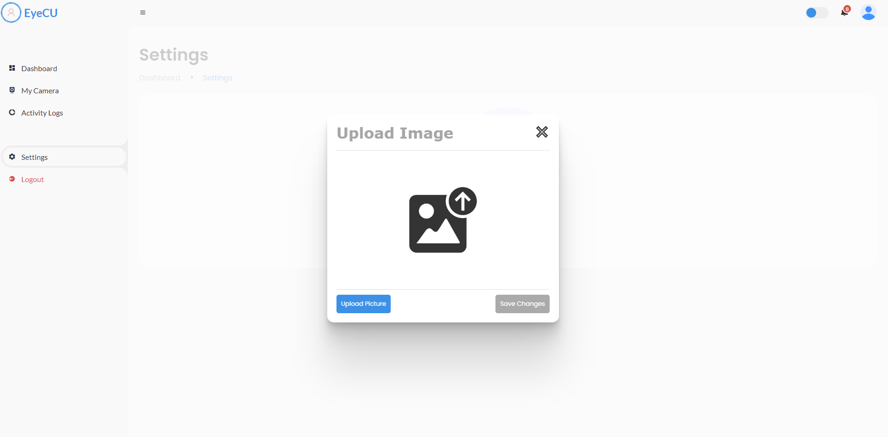
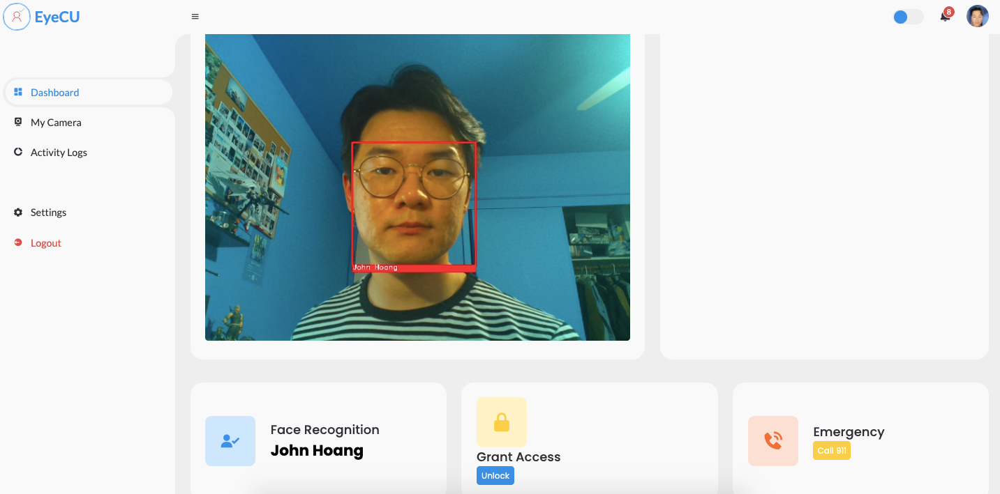
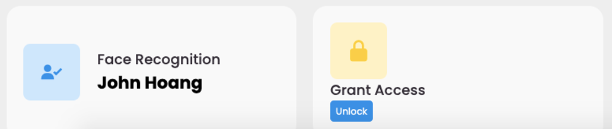
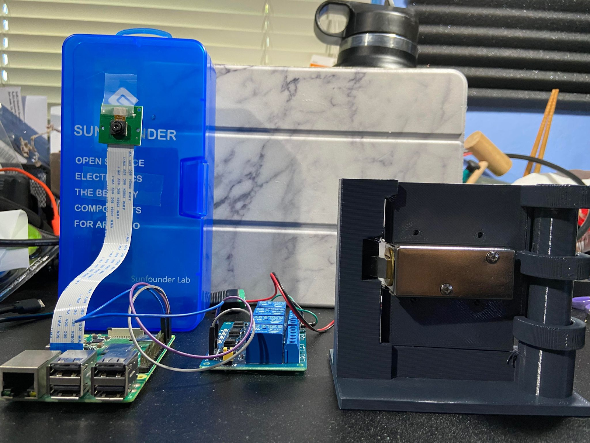

Landing / login page for unregistered users

Account registration page

Once logged in, users are taken to the homepage of the application.
Here is where users can view live footage through the remote camera!

Upon going to settings, users can upload a picture of a face for the system to detect!

Going back to the dash after uploading a picture of a face, the next time
a face is in frame, if that face is in the system, it will be detected.

When a face is detected, the name associated with the face will dynamically update
in the in the left tile. Only then, will users be able to click the "Unlock" button to remotely
control the solenoid lock for the door.

This is the hardware setup of the security system.
The components are: Raspberry Pi, PiCam, Relay, Solenoid Lock, and a 3D printed gate to act as a door.
This product demonstration was shot as a parody commercial to sell
what eyeCU can offer.